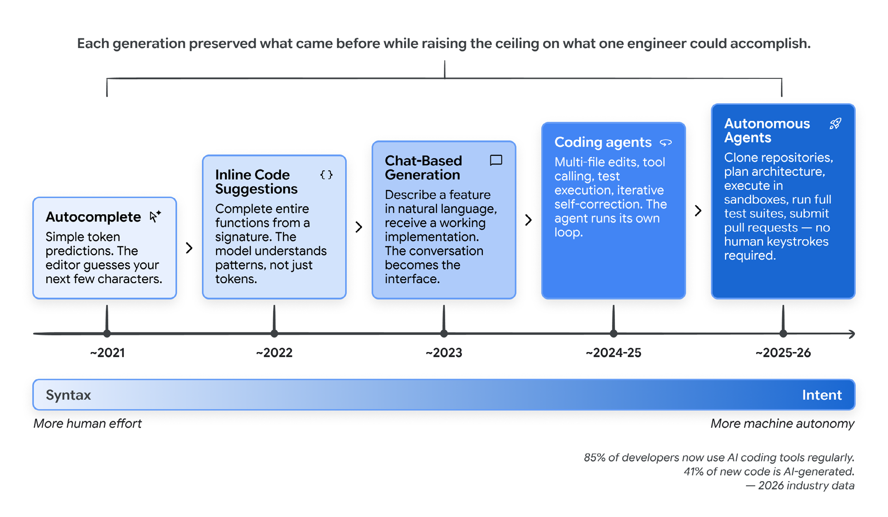
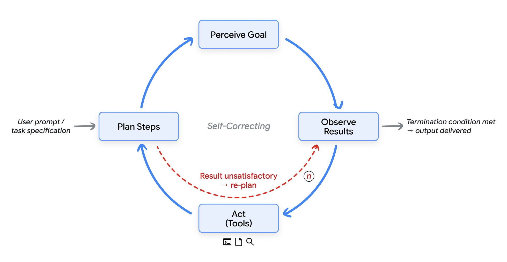
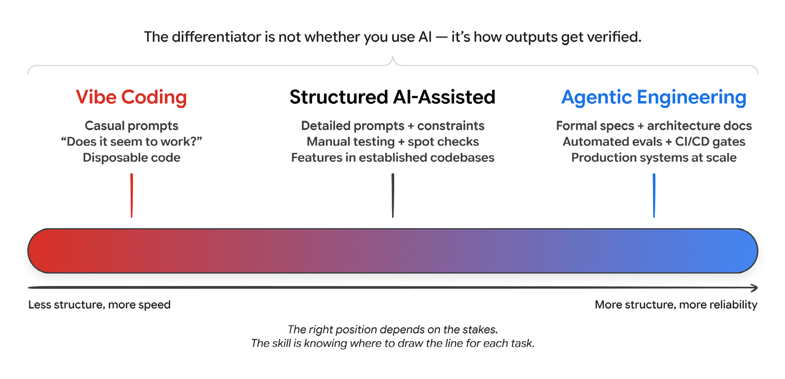
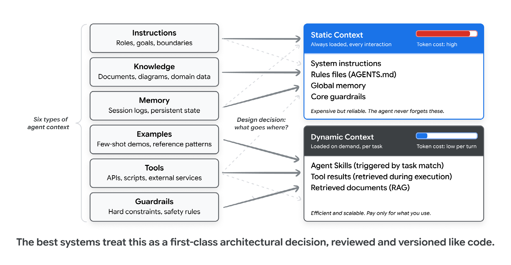
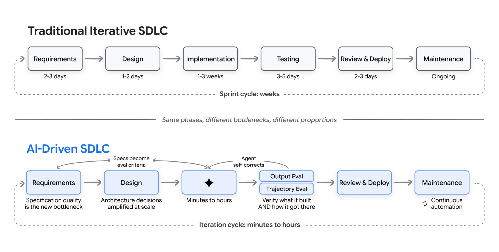
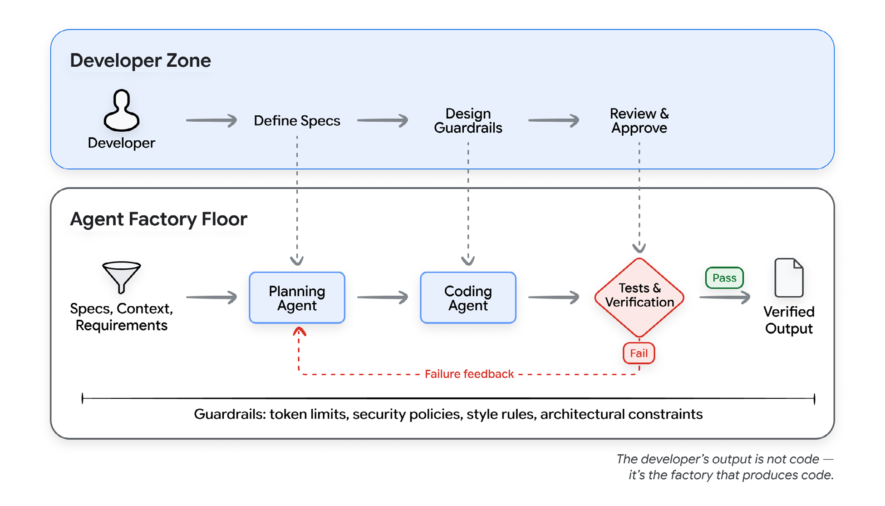
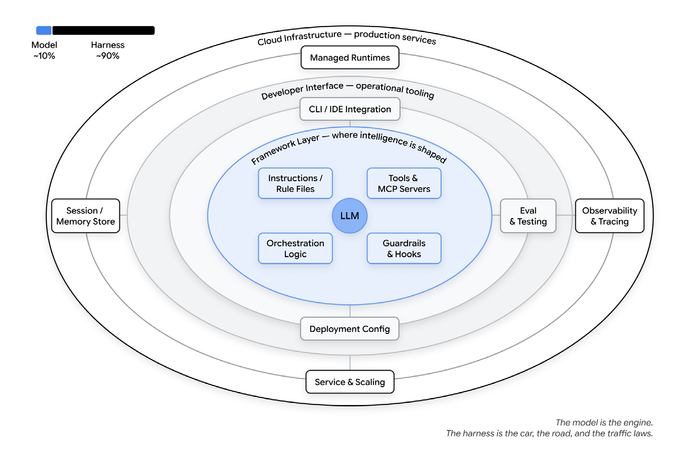
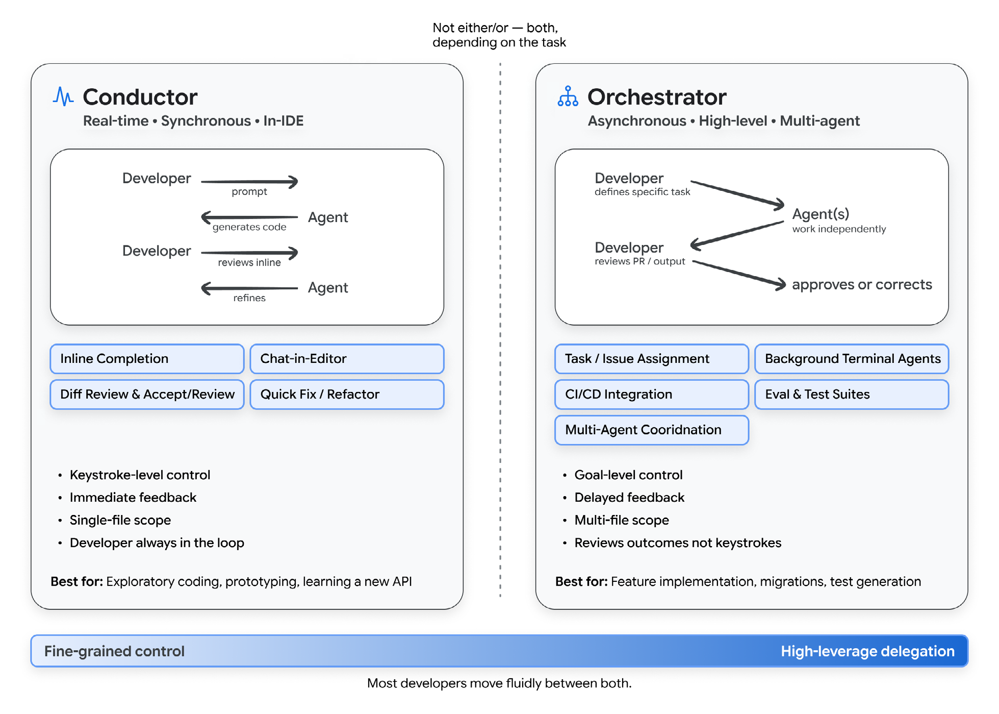
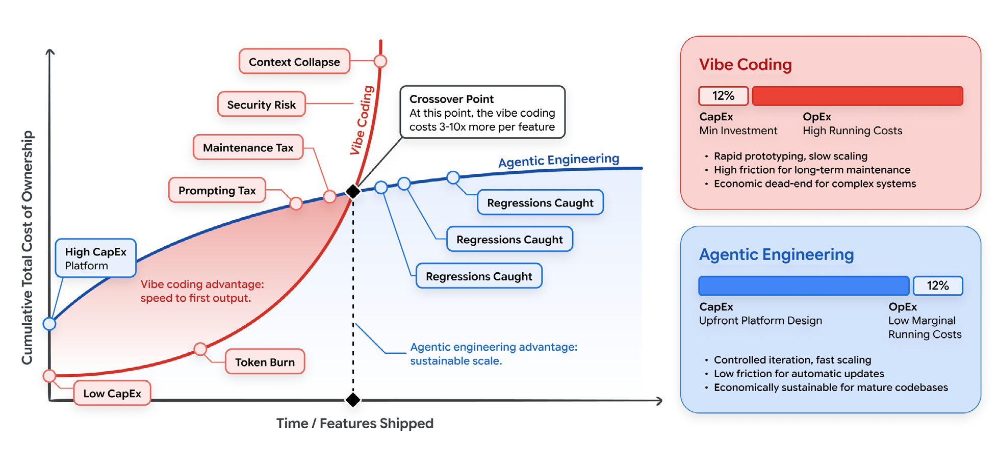

A practical field guide for modern software teams
Vibe Coding မှ Agentic Engineering သို့
AI ခေတ်မှာ software တည်ဆောက်ပုံ၊ developer role နဲ့ engineering discipline တို့ ဘယ်လိုပြောင်းလဲလာသလဲ။
software engineering မှာ အနက်ရှိုင်းဆုံး ပြောင်းလဲမှုက language အသစ်၊ framework အသစ်၊ cloud service အသစ်တစ်ခု မဟုတ်ပါဘူး။ code ရေးတာကနေ intent ကို ဖော်ပြတာဆီ ပြောင်းလာပြီး၊ အဲ့ဒီ intent ကို အလုပ်လုပ်တဲ့ software အဖြစ် intelligent systems တွေက ပြောင်းပေးနိုင်မယ်လို့ ယုံကြည်လာတာပဲဖြစ်ပါတယ်။
computing သမိုင်းတစ်လျှောက် programming ဆိုတာ translation လုပ်ရတဲ့အလုပ်တစ်ခုဖြစ်ခဲ့ပါတယ်။ အရင်ဆုံး problem ကို လူတွေနားလည်တဲ့ စကားလုံးတွေနဲ့ နားလည်အောင်လုပ်ရတယ်၊ ပြီးရင် solution ကို သဘောတရားအဆင့်မှာ design လုပ်ရတယ်၊ နောက်ဆုံး machine execute လုပ်နိုင်မယ့် syntax အဖြစ် ပြန်ရေးရတယ်။ ဒီအဆင့်တစ်ခုချင်းစီမှာ friction ရှိပါတယ်။ အခုတော့ အဲ့ဒီ friction တွေ လျော့ကျလာနေပါပြီ။ software engineering ဟာ high-level programming languages ပေါ်လာပြီးနောက်ပိုင်း အကြီးမားဆုံး transformation တစ်ခုကို ဖြတ်သန်းနေပါတယ်။
နှစ်ပေါင်းများစွာ developer နဲ့ machine ကြားက အဓိက interface ဟာ syntax ဖြစ်ခဲ့ပါတယ်။ curly braces, semicolons, type annotations နဲ့ programming language တွေရဲ့ တိကျတဲ့ grammar တွေပေါ့။ အဲ့ဒီခေတ်က ကုန်ဆုံးလာပါပြီ။
အခု paradigm အသစ်မှာ developer က ဘယ်လိုတည်ဆောက်မလဲဆိုတာထက် ဘာတည်ဆောက်ချင်သလဲဆိုတာကို ဖော်ပြပါတယ်။ implementation ကို machine က handle လုပ်ပြီး၊ human က intent, architecture နဲ့ judgment ကိုပေးပါတယ်။ ဒါက သိပ်ဝေးတဲ့ အနာဂတ် မဟုတ်တော့ပါဘူး။ professional developers အများအပြားအတွက် နေ့စဉ်လုပ်နေကြတဲ့ reality ဖြစ်နေပါပြီ။ 2026 အစပိုင်းအရ professional developers 85% က AI Coding Agents တွေကို ပုံမှန်သုံးနေကြပြီး၊ 51% က နေ့တိုင်းသုံးနေကြပါတယ်။ code အသစ်တွေရဲ့ ခန့်မှန်း 41% ဟာ AI-generated ဖြစ်ပါတယ်။
ဒီပြောင်းလဲမှုက တစ်ညတည်းနဲ့ ဖြစ်လာတာမဟုတ်ပါဘူး။ editor ထဲက ရိုးရိုး token prediction ဖြစ်တဲ့ autocomplete ကနေ စခဲ့တယ်။ အဲ့ဒီနောက် function တစ်ခုလုံးကို ဖြည့်ပေးနိုင်တဲ့ inline code suggestions ရောက်လာတယ်။ chat-based interfaces တွေက feature ကို natural language နဲ့ ရှင်းပြပြီး working implementation ပြန်ယူလို့ရစေတယ်။ အခု fully autonomous agents တွေက repository ကို clone လုပ်နိုင်တယ်၊ multi-file changes ကို plan ချနိုင်တယ်၊ sandboxed environments ထဲမှာ execute လုပ်နိုင်တယ်၊ tests run နိုင်တယ်၊ pull requests တင်နိုင်တယ်။ ဒီအလုပ်တွေအားလုံးအတွက် human က code တစ်ကြောင်းတောင် ကိုယ်တိုင်ရိုက်စရာမလိုတော့ပါဘူး။

Software Development Life Cycle (SDLC) အပေါ် သက်ရောက်မှုက အရမ်းကြီးပါတယ်။ requirements gathering ကနေ deployment, maintenance အထိ phase အားလုံးကို AI capabilities တွေက ပြန်လည်ပုံဖော်နေပါတယ်။ ဒါပေမယ့် ဒီ transformation ဟာ တစ်ပြေးညီဖြစ်တာလည်းမဟုတ်၊ ရိုးရှင်းတာလည်းမဟုတ်ပါဘူး။ spectrum ရဲ့ တစ်ဖက်မှာ developer က AI ကို prompt ပေးပြီး ပြန်လာသမျှကို လက်ခံတဲ့ ပေါ့ပေါ့ပါးပါး “vibe coding” ရှိတယ်။ နောက်တစ်ဖက်မှာတော့ carefully designed constraints, tests နဲ့ feedback loops တွေထဲမှာ AI ကို powerful implementation engine အဖြစ်ထားပြီး architecture, correctness နဲ့ quality ကို human က oversight ဆက်ယူထားတဲ့ disciplined “agentic engineering” ရှိပါတယ်။
ဒီနှစ်ခုကို ခွဲသိဖို့ အရေးကြီးပါတယ်။ team က payment processing system ကို vibe coding နဲ့ရေးနေတယ်လို့ CTO ကိုပြောရင် လက်ခံနိုင်မှာမဟုတ်သလို စိုးရိမ်သွားမှာလည်း သေချာပါတယ်။ human-designed constraints အောက်မှာ AI က implementation ကို handle လုပ်ပြီး test coverage နဲ့ correctness ကို ထိန်းထားတဲ့ agentic engineering သုံးနေတယ်လို့ ပြောတာကတော့ လုံးဝမတူတဲ့ conversation ဖြစ်ပါတယ်။
ဒီစာအုပ်က အဲ့ဒီ conversation အတွက် foundation ပေးထားပါတယ်။ casual vibe coding ကနေ disciplined agentic engineering အထိ spectrum ကိုကြည့်မယ်၊ developer role ဟာ code ရေးသူကနေ judgment ပေးသူ၊ conductor ကနေ orchestrator အဖြစ် ဘယ်လိုပြောင်းနေသလဲ လေ့လာမယ်၊ တကယ်အားကိုးလို့ရတဲ့ software ထွက်လာအောင် ဒီ tools တွေကို ဘယ်လိုသုံးရမလဲဆိုတာ ရှင်းပြသွားမှာဖြစ်ပါတယ်။
tools, capabilities နဲ့ paradigms အသစ်တွေ အပတ်တိုင်းလိုလို ထွက်လာပါတယ်။ engineering teams တွေအတွက် ဒီ landscape ကို နားလည်နိုင်မယ့် framework တစ်ခုလိုပါတယ်။ လအနည်းငယ်နေရင် outdated ဖြစ်သွားမယ့် snapshot မဟုတ်ဘဲ၊ tools တွေပြောင်းသွားရင်တောင် အသုံးဝင်နေမယ့် principles နဲ့ mental models တွေလိုတာဖြစ်ပါတယ်။
AI က SDLC ကို ဘယ်လိုပြန်လည်ပုံဖော်နေသလဲ နားလည်ချင်ပြီး production software မှာလိုအပ်တဲ့ discipline မလျော့ဘဲ capabilities အသစ်တွေကို adopt လုပ်ချင်တဲ့ software engineers, engineering managers, architects နဲ့ technical leaders တွေအတွက်ဖြစ်ပါတယ်။ modern software development practices တွေနဲ့ ရင်းနှီးပြီးသားလို့ ယူဆထားပေမယ့် AI ဒါမှမဟုတ် machine learning အသေးစိတ် သိထားဖို့တော့ မလိုပါဘူး။
ရှေ့ဆက်မသွားခင် agent ဆိုတာဘာလဲ၊ vibe coding ဆိုတာ တကယ်ဘာကိုဆိုလိုတာလဲဆိုတာ အားလုံးအမြင်တူအောင် အရင်နားလည်ထားဖို့လိုပါတယ်။ term နှစ်ခုလုံးကို အဓိပ္ပါယ်အမျိုးမျိုးနဲ့ သုံးလာကြတာကြောင့် သေချာခွဲရှင်းဖို့လိုပါတယ်။
AI agent ဆိုတာ goal တစ်ခုကို perceive လုပ်တယ်၊ goal ရောက်ဖို့ steps တွေ plan ချတယ်၊ tools တွေကတစ်ဆင့် actions ယူတယ်၊ results ကို observe လုပ်တယ်၊ ပြီးတော့ goal ပြည့်တဲ့အထိ ဒါမှမဟုတ် stopping condition ရောက်တဲ့အထိ iterate လုပ်တဲ့ software system ဖြစ်ပါတယ်။ chatbot က response တစ်ခုပေးပြီး နောက် prompt ကိုစောင့်နေပေမယ့် agent ကတော့ သူ့ loop နဲ့သူ run နေပါတယ်။ အပေါ်ဆုံးမှာ goal ပေးလိုက်ရုံနဲ့ step တစ်ခုစီမှာ ဘာဆက်လုပ်မလဲ သူ့ဘာသာ ဆုံးဖြတ်သွားပါတယ်။

agent တိုင်းမှာ အခြေခံအဆင့်ဖြစ်ဖြစ်၊ အဆင့်မြင့်ဖြစ်ဖြစ် အဓိကအစိတ်အပိုင်း ငါးခုပါပါတယ်။
ဒီအစိတ်အပိုင်းတွေက mission ယူ၊ လက်ရှိအခြေအနေ scan လုပ်၊ စဉ်းစား၊ action ယူ၊ observe လုပ်ပြီး iterate ပြန်လုပ်ဆိုတဲ့ continuous loop ထဲမှာ အတူအလုပ်လုပ်ပါတယ်။ ဒီ loop က agent တိုင်းရဲ့ နှလုံးခုန်သံလိုပါပဲ။
February 2025 မှာ Andrej Karpathy က programming လုပ်ပုံအသစ်တစ်မျိုးကို ရေးတင်ခဲ့ပြီး software engineering community ထဲမှာ အရမ်းပျံ့နှံ့သွားပါတယ်။ သူဖော်ပြတဲ့ approach က “vibe အတိုင်း လုံးဝမျှောလိုက်၊ အဆပေါင်းများစွာ မြန်ဆန်လာတဲ့ တိုးတက်မှုကို လက်ခံပြီး code ရှိနေတယ်ဆိုတာတောင် မေ့ထားလိုက်” ဆိုတဲ့ပုံစံပါ။ ဒီ mode မှာ developer က လိုချင်တာကို natural language နဲ့ပြောတယ်၊ AI output ကိုလက်ခံတယ်၊ တစ်ခုခုပျက်ရင် error message ကို prompt ထဲပြန်ကူးပြီး AI ကိုပြင်ခိုင်းတယ်။
ဒီ term viral ဖြစ်သွားတာက developers အများအပြား ဒီလိုလုပ်နေပြီး အဲ့ဒီ workflow ကို ခေါ်စရာစကားလုံး မရှိသေးတာကြောင့်ပါ။ လအနည်းငယ်အတွင်း “vibe coding” ကို AI-assisted development workflow အားလုံးအတွက် သုံးလာတဲ့အခါ ရှုပ်ထွေးလာပါတယ်။ well-specified feature တစ်ခုကို AI assistant နဲ့ implement လုပ်နေတဲ့ senior engineer ကို vibe coding လို့ခေါ်မလား။ carefully planned architecture ကို AI agents နဲ့ execute လုပ်နေတဲ့ team ကိုရော ဘယ်လိုခေါ်မလဲ။ ဒီ term ကို တွင်တွင်ကျယ်ကျယ်သုံးလာတာနဲ့အမျှ အဓိပ္ပါယ်အတိမ်အနက်ကို ဝေခွဲရခက်လာပါတယ်။
2026 အစောပိုင်းမှာ Karpathy ကိုယ်တိုင် မူလ framing က ကျဉ်းလွန်းတယ်လို့ လက်ခံပြီး spectrum ရဲ့ disciplined ဘက်ကို ဖော်ပြဖို့ “agentic engineering” ဆိုတဲ့ term ကို မိတ်ဆက်ခဲ့ပါတယ်။
vibe coding နဲ့ agentic engineering ကို binary နှစ်ခုလို ခွဲတာထက် spectrum ရဲ့ endpoints နှစ်ဖက်လို စဉ်းစားတာ ပိုအသုံးဝင်ပါတယ်။ အဓိကကွာခြားချက်ဟာ AI သုံးမသုံး မဟုတ်ပါဘူး။ AI output ပတ်လည်မှာ structure, verification နဲ့ human judgment ဘယ်လောက်ရှိသလဲဆိုတာပါ။
| Dimension | Vibe Coding | Structured AI-Assisted Coding | Agentic Engineering |
|---|---|---|---|
| Intent specification | casual natural-language prompts | examples နဲ့ constraints ပါတဲ့ detailed prompts | formal specs, architecture docs, memory files |
| Verification | “အလုပ်လုပ်သလို ထင်ရလား” | manual testing, spot-checking | automated test suites, CI/CD gates, LM judges |
| Codebase understanding | generated code ကို developer မဖတ်တာမျိုးရှိ | critical paths တွေကို ရွေးပြီး review | architecture ကို comprehensive review; implementation details ကို AI handle |
| Error handling | error messages ကို AI ဆီ copy-paste | developer က root cause diagnose, AI က fix implement | agents က defined bounds အတွင်း self-diagnose; architectural issues ကို humans handle |
| Appropriate scope | prototypes, scripts, personal projects, hackathons | established codebases ထဲက features | production systems, team-scale development |
| Risk profile | high; disposable code အတွက် လက်ခံနိုင် | moderate; key checkpoints မှာ human judgment | low; stage တိုင်းမှာ systematic verification |

Applied Tip: ဒီ spectrum ပေါ်မှာ ဘယ်နေရာရွေးမလဲဆိုတာ အလုပ်ရဲ့ အရေးပါမှုနဲ့ risk ဘယ်လောက်ရှိသလဲဆိုတာပေါ် မူတည်ပါတယ်။ weekend prototype တစ်ခုဆို pure vibe coding ဖြစ်လို့ရတယ်။ financial transactions ကို handle လုပ်တဲ့ production API ဆို agentic engineering လိုပါတယ်။ လက်တွေ့အလုပ်အများစုက ကြားထဲမှာရှိပြီး task တစ်ခုစီအတွက် line ကို ဘယ်မှာဆွဲမလဲ သိတာက skill ဖြစ်ပါတယ်။
အဆုံးနှစ်ဖက်ရဲ့ အကြီးဆုံးကွာခြားချက်က output ကို verify လုပ်ပုံပါ။ vibe coding မှာ verification က optional ဖြစ်တယ်။ code run ကြည့်ပြီး မှန်သလိုရှိမရှိ စစ်ရုံပါ။ agentic engineering မှာ mechanism နှစ်ခု အတူအလုပ်လုပ်ပါတယ်။ tests က deterministic parts ကို verify လုပ်တယ်။ ဒီ input ပေးရင် ဒီ output ထွက်ရမယ်ဆိုတာမျိုးပါ။ evaluations ဒါမှမဟုတ် evals က non-deterministic parts ကို verify လုပ်တယ်။ agent က လုပ်သင့်တဲ့ အဆင့်တွေကို အစဉ်လိုက်မှန်မှန် လုပ်ခဲ့လား၊ tools မှန်မှန်ရွေးလား၊ final response က quality bar ပြည့်လားဆိုတာပါ။ tests ကို code နဲ့စစ်ပြီး evals ကို labelled datasets, scoring rubrics နဲ့ LM judges တွေနဲ့စစ်ပါတယ်။ နှစ်မျိုးလုံးမရှိရင် prompts ဘယ်လောက် sophisticated ဖြစ်ဖြစ် vibe coding ပဲဖြစ်ပါတယ်။
field က mature ဖြစ်လာတာနဲ့ insight တစ်ခုသိလာရပါတယ်။ AI-generated code ရဲ့ quality က prompt ကို ဘယ်လောက်လှလှရေးထားသလဲဆိုတာထက် context ဘယ်လောက်ကောင်းကောင်းပေးထားသလဲဆိုတာပေါ် ပိုမူတည်ပါတယ်။ ဒီကနေ context engineering ဆိုတဲ့ concept ပေါ်လာတယ်။ codebase, architecture, conventions နဲ့ intent အကြောင်း rich, structured information ကို AI agents ဆီပေးတဲ့ practice ဖြစ်ပါတယ်။
developer တွေက context အမျိုးအစားခြောက်ခုကို အဓိကစဉ်းစားရပါတယ်။
AI code generation မှာ ဒီခြောက်မျိုးထဲက ဘာတွေကို upfront ပေးမလဲ၊ ဘာတွေကို on demand retrieve လုပ်ခွင့်ပေးမလဲ သေချာ balance လုပ်ရပါတယ်။ ဒီကနေ static context နဲ့ dynamic context ကွဲလာပါတယ်။
Static context က အမြဲ load လုပ်ထားတာပါ။ system instructions, rule files (AGENTS.md, CLAUDE.md, GEMINI.md), global memory နဲ့ persona definitions တွေဖြစ်ပါတယ်။ agent က ဘယ်သူလဲ၊ ဘယ်လို behave လုပ်မလဲ သတ်မှတ်ပါတယ်။ relevance ရှိမရှိမရွေး interaction တိုင်းမှာ token တိုင်းပါနေလို့ static context က စရိတ်ကြီးပါတယ်။
Dynamic context က on demand load လုပ်တာပါ။ task matching ကြောင့် trigger ဖြစ်တဲ့ skill instructions, execution အတွင်းရလာတဲ့ tool results, RAG pipelines ကယူတဲ့ documents နဲ့ windowed session history တွေဖြစ်ပါတယ်။ လိုတဲ့အချိန်မှ token cost ပေးရလို့ efficient ဖြစ်ပါတယ်။
static နဲ့ dynamic ဘယ်ဘက်မှာ ဘာထားမလဲဆိုတာ တကယ့် engineering trade-off ဖြစ်ပါတယ်။ static context များလွန်းရင် tokens ဖြုန်းပြီး signal ပျော့သွားတယ်။ နည်းလွန်းရင် critical rules တွေကို agent မေ့မယ်။ အကောင်းဆုံး systems တွေက ဒီ boundary ကို first-class architectural decision အဖြစ်ထားပြီး တခြား configuration တွေလို review နဲ့ version လုပ်ပါတယ်။

dynamic context ကို manage လုပ်ဖို့ အားအကောင်းဆုံး pattern က Agent Skills ဖြစ်ပါတယ်။ task လိုတဲ့အခါမှ agent က load လုပ်တဲ့ structured, portable procedural knowledge packages တွေပါ။
specialized knowledge အားလုံးကို system prompt ထဲထည့်မယ့်အစား skills သုံးရင် agent ကို lightweight generalist အဖြစ်ထားပြီး လိုအပ်တဲ့အချက်အလက်ကို လိုအပ်သလောက် အဆင့်ဆင့်ဖော်ထုတ်ပေးတဲ့နည်းနဲ့ specialist role ပြောင်းနိုင်ပါတယ်။ startup မှာ lightweight metadata ပဲမြင်တယ်၊ task match ဖြစ်မှ full instructions ကို load လုပ်တယ်၊ တကယ်လိုမှ deep reference material ကိုယူတယ်။ ဒီလိုနဲ့ agent တစ်ခုက specialized capabilities ဒါဇင်နဲ့ချီ သယ်ထားနိုင်ပေမယ့် လက်ရှိသုံးနေတဲ့တစ်ခုအတွက်ပဲ token cost ပေးရပါတယ်။
Agent Skills ကို major coding agents နဲ့ enterprise platforms တွေမှာ အလျင်အမြန် adopt လုပ်လာကြပါတယ်။ အကြောင်းက AI agent development မှာ ကြုံခဲ့ရတဲ့ problems လေးခုကို ဖြေရှင်းပေးလို့ပါ။
“prompt engineering” ကနေ “context engineering” ဆီပြောင်းလာတာက AI နဲ့အလုပ်လုပ်တဲ့အခါ နက်ရှိုင်းတဲ့အမှန်တရားတစ်ခုကို ပြပါတယ်။ models တွေက စကားလုံးလှလှနဲ့ရေးထားတဲ့ instructions ထက် ကျွမ်းကျင်တဲ့ human developer တစ်ယောက်က အလုပ်ကောင်းကောင်းလုပ်ဖို့လိုမယ့် context မျိုးကို ပိုလိုပါတယ်။ “AI ကို code ကောင်းကောင်းရေးအောင် ဘယ်လိုလှည့်စားမလဲ” မဟုတ်ပါဘူး။ “team member အသစ်တစ်ယောက် effective ဖြစ်ဖို့ ဘာသိဖို့လိုမလဲ၊ အဲ့ဒီ knowledge ကို AI နားလည်အသုံးချနိုင်အောင် ဘယ်လိုစနစ်တကျ ထည့်သွင်းပေးမလဲ” ဆိုတာပါ။
context engineering ဟာ vibe coding နဲ့ agentic engineering ကြားက bridge ဖြစ်ပါတယ်။
syntax ရေးတာကနေ context ကို engineer လုပ်တာဆီ focus ပြောင်းလိုက်တဲ့အခါ software creation ရဲ့ bottlenecks တွေလည်း အခြေခံကနေ ပြောင်းသွားပါတယ်။ boilerplate ကို human လက်နဲ့ရိုက်ပြီးစီးအောင် စောင့်နေတာမဟုတ်တော့ဘဲ boundaries ကို human စိတ်နဲ့ သတ်မှတ်ပေးဖို့ စောင့်နေရတာဖြစ်ပါတယ်။ software တည်ဆောက်ဖို့သုံးတဲ့ systems တွေက delivery speed ကို ဆုံးဖြတ်လာတဲ့အတွက် traditional Software Development Life Cycle (SDLC) ကို အသစ်ပြန်စဉ်းစားဖို့လိုလာပါတယ်။
SDLC က major transformation တစ်ကြိမ် ဖြတ်သန်းပြီးသားပါ။ လွန်ခဲ့တဲ့နှစ်နှစ်ဆယ်အတွင်း enterprises အများစုက sequential waterfall processes ကနေ iterative models ဖြစ်တဲ့ Agile sprints, continuous integration, DevOps pipelines နဲ့ rapid release cycles တွေဆီ ပြောင်းခဲ့ကြပါတယ်။ အဲ့ဒီ shift က feedback loops ကိုတိုစေတယ်၊ testing ကို development နားကပ်စေတယ်၊ deployment ကို သုံးလတစ်ကြိမ် event မဟုတ်ဘဲ continuous process ဖြစ်စေတယ်။
AI က ဒီ cycle ကို အရမ်းတိုစေပေမယ့် phase အားလုံး တစ်ပြေးညီမဟုတ်ပါဘူး။ အရင်က weeks ကြာတဲ့ implementation ကို hours အတွင်းလုပ်နိုင်ပေမယ့် requirements, architecture နဲ့ verification က human-paced ဖြစ်နေဆဲပါ။ ရလာတာက SDLC အဟောင်းရဲ့ ပိုမြန်တဲ့ version မဟုတ်ပါဘူး။ phases ကြား boundaries တွေမှုန်ဝါးလာတယ်၊ iteration cycles က weeks ကနေ minutes အထိတိုလာတယ်၊ developer role က primary implementor ကနေ system designer နဲ့ quality arbiter အဖြစ်ပြောင်းလာတဲ့ workflow အသစ်ဖြစ်ပါတယ်။

ပြောင်းလဲမှုအမြန်နှုန်းအကြောင်း: ဒီ phase-by-phase ပုံစံက mid-2026 အခြေအနေကို ဖော်ပြထားတာပါ။ အရမ်းမြန်မြန်ပြောင်းနေပါတယ်။ developers က specs ကနေ review ဆီ တိုက်ရိုက်သွားပြီး implementation, testing နဲ့ deployment ကို background မှာ AI agents က handle လုပ်တဲ့ workflows တွေကို teams တချို့ စမ်းနေပါပြီ။ 12 months အတွင်း ဒီ boundaries တွေ မတူတော့နိုင်ပါဘူး။ မပြောင်းဘဲကျန်မှာက human judgment, taste နဲ့ AI output ကို verify လုပ်နိုင်တဲ့ skill ဖြစ်ပါတယ်။
requirements phase မှာ intent နဲ့ implementation ကြားက gap ဟာ အရင်က အကျယ်ဆုံးဖြစ်ပါတယ်။ business needs ကို technical specifications အဖြစ်ပြောင်းရတာ manual ဖြစ်သလို error-prone လည်းဖြစ်လို့ stakeholders လိုချင်တာနဲ့ engineers တည်ဆောက်တာကြား persistent gap ဖြစ်စေပါတယ်။
modern AI tools တွေက requirements refinement မှာ တိုက်ရိုက်ပါဝင်နိုင်ပါတယ်။ product briefs ကနေ user stories generate လုပ်တယ်၊ human မမြင်မိတဲ့ edge cases တွေဖော်ထုတ်တယ်၊ natural-language descriptions ကနေ API schemas ထုတ်တယ်၊ specification documents ကနေ interactive prototypes generate လုပ်တယ်။ agentic development environments သုံးရင် description ကနေ working prototype ကို minutes အတွင်းရောက်နိုင်လို့ requirements-to-prototype feedback loop က zero နီးပါးဖြစ်သွားပါတယ်။
requirements ဟာ teams တွေကြား လက်ဆင့်ကမ်းတဲ့ document တစ်ခု မဟုတ်တော့ပါဘူး။ specification နဲ့ initial implementation ကို တစ်ချိန်တည်းထုတ်ပေးတဲ့ humans နဲ့ AI ကြား conversation ဖြစ်လာပါတယ်။
architecture ဟာ SDLC ထဲမှာ human-centric အဖြစ် အခိုင်မာဆုံးကျန်နေတဲ့ phase ပါ။ ဘာကြောင့်လဲဆိုတော့ architectural decisions ဆိုတာ consistency vs. availability, complexity vs. flexibility, build vs. buy စတဲ့ trade-offs တွေအကြောင်းပါ။ အဲ့ဒီ trade-offs တွေဟာ business context, organisational constraints နဲ့ long-term strategic considerations ပေါ်မူတည်ပြီး AI က အပြည့်အဝနားမလည်နိုင်သေးပါဘူး။
ဆုံးဖြတ်ချက်ချပြီးသား architectural decisions ကို implement လုပ်ရာမှာတော့ AI က အရမ်းကောင်းပါတယ်။ architecture document ရှင်းရှင်းပေးထားရင် AI agents က application တစ်ခုလုံး scaffold လုပ်နိုင်တယ်၊ modules တွေတစ်လျှောက် consistent patterns generate လုပ်နိုင်တယ်၊ code အသစ်က established conventions ကိုလိုက်နာတာ သေချာစေနိုင်တယ်။ developer role က boilerplate ရေးတာကနေ boilerplate က implement လုပ်မယ့် structural decisions ကို ချပြီး document လုပ်တာဆီ ပြောင်းသွားပါတယ်။
modern coding agents တွေက natural-language descriptions ကနေ features တစ်ခုလုံး generate လုပ်နိုင်တယ်၊ complex algorithms implement လုပ်နိုင်တယ်၊ အတူတကွမှန်မှန်အလုပ်လုပ်တဲ့ multi-file changes ထုတ်နိုင်တယ်။ industry surveys တွေအရ productivity 25% ကနေ 39% အထိ တိုးတက်တယ်လို့ report လုပ်ထားပြီး task တချို့မှာ ပိုများပါတယ်။
headline numbers ထက် လက်တွေ့ပုံစံက ပိုရှုပ်ပါတယ်။ METR study တစ်ခုမှာ experienced developers တွေ AI assistants သုံးပြီး tasks တချို့လုပ်တဲ့အခါ 19% ပိုကြာခဲ့ပါတယ်။ AI output ကို verify, debug နဲ့ correct လုပ်ရတဲ့အချိန်ကြောင့်ပါ။ AI က implementation work ကို ဖျောက်ပစ်တာမဟုတ်ဘဲ writing ကနေ reviewing, guiding နဲ့ verifying အဖြစ်ပြောင်းလိုက်တာပါ။
AI-generated code ကို test လုပ်တဲ့အခါ agent က ဘာထုတ်ပေးသလဲတင်မက ဘယ်လိုရောက်လာသလဲပါ evaluate လုပ်ဖို့လိုပါတယ်။ output evaluation က final artifact ကိုစစ်တယ်။ code compile ဖြစ်လား၊ tests pass လားပေါ့။ trajectory evaluation က tool calls နဲ့ intermediate reasoning sequence အပြည့်ကိုစစ်တယ်။ verification steps ကို skip လုပ်ထားပေမယ့် fluent output ထွက်နေတဲ့ failure က visible error ပါတာထက် အန္တရာယ်ပိုများလို့ နှစ်မျိုးလုံးလိုပါတယ်။
AI က test generation ကိုလည်း ပြောင်းလဲပေးပါတယ်။ human မစဉ်းစားမိတဲ့ edge cases နဲ့ property-based tests အပါအဝင် test cases တွေကို agents က ထုတ်ပေးနိုင်တယ်။ ပိုအရေးကြီးတာက tests နဲ့ evals တွေဟာ AI agents ဆီ intent ပို့ဖို့ အဓိက mechanism ဖြစ်လာတာပါ။ eval suite ကောင်းကောင်းရေးထားရင် “correct” ဆိုတာဘာလဲ AI ကို ပြောပြပြီး automated verify လုပ်နိုင်ပါတယ်။
ဒီ practices တွေကို continuous quality flywheel ထဲချိတ်တဲ့အခါ အထိရောက်ဆုံးဖြစ်ပါတယ်။ benchmark suite နဲ့ evaluate လုပ်၊ root causes တွေကို အမျိုးအစားတူရာ အုပ်စုခွဲပြီး failures diagnose လုပ်၊ ပြဿနာဖြစ်စေတဲ့ prompts ဒါမှမဟုတ် tools ကို optimize လုပ်၊ regression suite နဲ့ fixes verify လုပ်၊ production traffic ထဲက failure modes အသစ်တွေ monitor လုပ်ပါတယ်။ cycle တစ်ပတ်တိုင်း အကျိုးအမြတ်စုလာပါတယ်။
review process မှာ AI က first-pass reviewer အဖြစ် potential bugs, style violations, security vulnerabilities နဲ့ performance issues တွေကို human reviewer မမြင်ခင် ဖော်ထုတ်ပေးနိုင်ပါတယ်။ design, maintainability နဲ့ strategic alignment လို context-dependent decisions တွေမှာ human judgment လိုသေးလို့ human review ကို အစားမထိုးပါဘူး။ ဒါပေမယ့် reviewers ရဲ့ cognitive burden ကို အများကြီးလျှော့ပေးပါတယ်။
deployment pipelines တွေလည်း AI-aware ဖြစ်လာပါတယ်။ AI agents က deployment health monitor လုပ်နိုင်တယ်၊ problematic releases ကို automatically roll back လုပ်နိုင်တယ်၊ changes ရဲ့ nature နဲ့ scope ပေါ်မူတည်ပြီး deployment risks ကို predict လုပ်နိုင်တယ်။ modern deployment platforms တွေက production behaviour နဲ့ development decisions ကြား feedback loops ဖန်တီးဖို့ AI-powered observability နဲ့ ပိုချိတ်လာပါတယ်။
လျှော့တွက်ထားကြတဲ့ transformation က maintenance မှာဖြစ်နိုင်ပါတယ်။ team member အသစ်အတွက် မဖောက်နိုင်လောက်အောင် ရှုပ်တဲ့ legacy codebases တွေကို AI assistance နဲ့ navigate, understand နဲ့ modify လုပ်နိုင်လာပါတယ်။ AI agent က codebase ကိုဖတ်၊ patterns ကိုနားလည်၊ change အတွက် relevant files တွေရှာပြီး existing architecture ကို respect လုပ်ထားတဲ့ modifications တွေ implement လုပ်နိုင်ပါတယ်။
ဒါက technical debt အပေါ် အရေးပါတဲ့သက်ရောက်မှုရှိပါတယ်။ original authors ပဲနားလည်လို့ “ထိဖို့အန္တရာယ်များလွန်းတယ်” ဆိုတဲ့ code ကို safe ဖြစ်အောင် refactor, modernize နဲ့ extend လုပ်နိုင်လာတယ်။ frameworks တွေကြား codebases migrate လုပ်တာ၊ deprecated APIs update လုပ်တာ၊ test suites modernize လုပ်တာတွေကို AI agents က systematically လုပ်နိုင်ပါတယ်။ အရင်က ပင်ပန်းပြီး risk များလို့ မလုပ်ဖြစ်ခဲ့တဲ့အလုပ်တွေပါ။
ဒီ transformations တွေအားလုံးကို ချိတ်ပေးတဲ့ mental model ကို factory model လို့ခေါ်ပါတယ်။ ဒီ model မှာ developer ရဲ့ primary output က code မဟုတ်ပါဘူး။ code ထုတ်ပေးတဲ့ system ဖြစ်ပါတယ်။ ဒီ system မှာ အောက်ပါတွေပါဝင်ပါတယ်။
factory manager က widget တစ်ခုချင်းကို လက်နဲ့မတပ်ပါဘူး။ assembly line ကို design လုပ်ပြီး quality control ကောင်းမကောင်း သေချာစေပါတယ်။ modern developer က development system ကို design လုပ်ပြီး output က required standard ပြည့်မပြည့် သေချာစေပါတယ်။ agents ကို step-by-step instructions ပေးတာထက် success criteria ပေးပြီး သူတို့ကို iterate လုပ်စေတာက success ရစေပါတယ်။

ဒီကနေ မေးခွန်းတစ်ခုထွက်လာပါတယ်။ factory ထဲက central machine ကဘာလဲ။ assembly line ထဲမှာ အလုပ်လုပ်နေတဲ့ agent ကိုယ်တိုင်က ဘယ်လိုပုံစံလဲ။
developer က factory manager ဆိုရင် AI model က factory floor ပေါ်က raw engine တစ်လုံးပဲဖြစ်ပါတယ်။ engine တစ်လုံးတည်းနဲ့ car မထုတ်နိုင်ပါဘူး။ belts, gears, safety sensors နဲ့ assembly line လိုပါတယ်။ AI-assisted development မှာ ဒီပတ်ဝန်းကျင် machinery ကို Harness လို့ခေါ်ပါတယ်။
AI agents စသုံးတဲ့ builders တွေက model ကို system တစ်ခုလုံးလို သဘောထားချင်တတ်ပါတယ်။ model အသစ်ထွက်ရင် agent ပိုတော်လာတယ်၊ model အဟောင်းဆို agent ပိုညံ့တယ်၊ ကောင်းတာဆိုးတာအားလုံးအတွက် model ကိုပဲ အကြောင်းပြချက်လုပ်ပါတယ်။ ဒီ intuition က မမှန်သလို investments မှားစေပါတယ်။ model က running agent တစ်ခုထဲက input တစ်ခုပဲဖြစ်ပါတယ်။ prompts, tools, context policies, hooks, sandboxes, sub-agents နဲ့ observability အားလုံးက harness ဖြစ်ပြီး model ကို တကယ်အလုပ်ပြီးအောင် ဝန်းရံပေးထားတဲ့ scaffolding ဖြစ်ပါတယ်။
Agent = Model + Harness
raw model ဟာ agent မဟုတ်သေးပါဘူး။ harness က state, tool execution, feedback loops နဲ့ enforceable constraints ပေးလိုက်မှ agent ဖြစ်လာပါတယ်။ Claude Code, Cursor, Codex, Antigravity, Aider ဒါမှမဟုတ် Cline သုံးတဲ့အခါ developer တွေတွေ့ရတဲ့ behaviour ကို အောက်က model တစ်ခုတည်းထက် harness က ဘာလုပ်သလဲဆိုတာက ပိုလွှမ်းမိုးပါတယ်။

AGENTS.md, CLAUDE.md, GEMINI.md, skill files နဲ့ sub-agent prompts တွေပါဝင်ပါတယ်။surface area များတယ်လို့ ထင်ရင် မှန်ပါတယ်။ ဒါက model provider ရဲ့ surface area မဟုတ်ဘဲ team ရဲ့ surface area ဖြစ်ပါတယ်။
model ကိုယ်တိုင်က task ကို ဘယ်လိုလုပ်မလဲဆုံးဖြတ်ပေမယ့် execute လုပ်ဖို့လိုတဲ့ tools, sandboxes နဲ့ orchestration ကို harness ကပေးပါတယ်။ ဒါကြောင့် AI agent အလုပ်လုပ်တဲ့ phase တိုင်းမှာ harness ရှိရပါတယ်။
ဒီ phase မှာ harness ကို configure နဲ့ calibrate လုပ်ပါတယ်။ AI က production code မရေးခင် developer က agent environment ကို setup လုပ်ရပါတယ်။ AGENTS.md ဆောက်တာ၊ architectural constraints သတ်မှတ်တာ စတဲ့ Instructions နဲ့ Rule Files ပေးရတယ်။ agent သုံးခွင့်ရှိမယ့် APIs ဒါမှမဟုတ် database schemas လို tools တွေသတ်မှတ်ပြီး ချိုးဖောက်ခွင့်မရှိတဲ့ fundamental rules တွေချရပါတယ်။
active coding အတွင်း harness က AI model ကို focused, secure နဲ့ productive ဖြစ်အောင် boundary အဖြစ်လုပ်ပါတယ်။ model က code generate လုပ်ရင်း isolated sandbox ထဲမှာ execute လုပ်တယ်။ file ဖတ်ဖို့၊ web search လုပ်ဖို့လိုရင် harness ပေးထားတဲ့ tools ကိုသုံးပါတယ်။
agentic workflow ထဲက testing ဟာ autonomous self-correction လုပ်နိုင်ဖို့ harness ကို အများကြီးအားကိုးပါတယ်။ agent က function ရေးပြီးတဲ့အခါ automated tests execute လုပ်နိုင်တဲ့ sandboxed terminal လို environment ကို harness ကပေးတယ်။ test fail ရင် orchestration logic က error output ကို capture လုပ်ပြီး model ဆီပြန်ပို့ကာ ထပ်စမ်းခိုင်းတယ်။ ဒီ automated “think → act → observe” loop ကို harness က ဖန်တီးပေးတာဖြစ်ပါတယ်။
code ရေးပြီးနောက် live ဒါမှမဟုတ် near-live environments ထဲမှာ agent safe ဖြစ်ဖို့ harness က ဆက်ထိန်းပါတယ်။ hard-coded password ကို push လုပ်မယ်ဆို commit ကို block တဲ့ deterministic hooks မျိုး run တယ်။ observability layer က token costs, latency နဲ့ agent drift ကို track လုပ်လို့ human engineers က deployment decision တစ်ခုကို agent ဘာကြောင့်ချခဲ့သလဲ audit လုပ်နိုင်ပါတယ်။
“vibe coding” ကနေ “agentic engineering” ပြောင်းတာဟာ သုံးတဲ့ tools အကြောင်းသက်သက်မဟုတ်ပါဘူး။ agent တစ်မျိုးတည်းနဲ့ developer က vibe coding လည်းလုပ်နိုင်သလို agentic engineering လည်းလုပ်နိုင်ပါတယ်။ harness ကို ဘယ်လောက်တမင်တကာ configure နဲ့ apply လုပ်ထားသလဲဆိုတာက ဆုံးဖြတ်ပါတယ်။ vibe coding က rapid implementation အတွက် minimal ဒါမှမဟုတ် implicit scaffolding ကိုသာအားကိုးတယ်။ agentic engineering က planning document အစကနေ production monitoring အထိ AI ကို guide လုပ်မယ့် clear, extensive harness abstractions ကိုအားကိုးပါတယ်။
ဒါရဲ့အကျိုးသက်ရောက်မှုကို တိုင်းတာလို့ရပါတယ်။ Terminal Bench 2.0 မှာ team တစ်ခုက model လုံးဝမပြောင်းဘဲ harness ပဲပြောင်းပြီး coding agent ကို Top 30 ပြင်ပကနေ Top 5 အထိတင်ခဲ့ပါတယ်။ LangChain study တစ်ခုမှာလည်း fixed model ပတ်လည်က system prompt, tools နဲ့ middleware ကိုပဲ ပြင်ပြီး benchmark score 13.7 points တိုးခဲ့ပါတယ်။
agent တစ်ခုခုမှားလုပ်ရင် model ကိုအရင်အပြစ်တင်တတ်ပါတယ်။ အများအားဖြင့် failure က missing tool, vague rule, absent guardrail ဒါမှမဟုတ် noise တွေနဲ့ပြည့်နေတဲ့ context window ကြောင့်ဖြစ်ပါတယ်။ ရိုးရိုးသားသားပြန်စစ်ရင် agent failures အများစုက configuration failures ဖြစ်ပါတယ်။
AI က implementation work ပိုယူလာတာနဲ့ developer role က စိတ်လှုပ်ရှားစရာကောင်းသလို မျက်စိလည်စရာကောင်းတဲ့ပုံစံနဲ့ ပြောင်းလာပါတယ်။ developer တွေက အခြေအနေအလိုက် အပြန်အလှန်ပြောင်းသုံးနိုင်တဲ့ mode နှစ်ခုအဖြစ် conductor နဲ့ orchestrator လို့ စဉ်းစားလို့ရပါတယ်။

conductor mode မှာ developer က AI pair-programmer နဲ့ real-time အလုပ်လုပ်တယ်။ IDE ထဲမှာ code ပေါ်လာတာကိုကြည့်တယ်၊ prompts နဲ့ corrections ပေးပြီး AI ကို guide လုပ်တယ်၊ ရေးသမျှကို fine-grained control ယူထားတယ်။ AI က powerful instrument ဖြစ်ပေမယ့် movement တိုင်းကို developer က actively direct လုပ်ပါတယ်။
complex logic, tricky issues debug လုပ်တာ ဒါမှမဟုတ် change တစ်ခုစီကို လုပ်တဲ့အချိန်မှာ နားလည်ဖို့လိုတဲ့ unfamiliar codebases တွေမှာ ဒီ mode သုံးလေ့ရှိပါတယ်။ GitHub Copilot, Google Gemini Code Assist, Cursor နဲ့ Windsurf လို tools တွေက inline completions, chat interfaces နဲ့ edit-in-place capabilities တွေကတစ်ဆင့် ဒီ mode ကို support လုပ်ပါတယ်။
traditional engineering backgrounds ကလာတဲ့ developers တွေအတွက် conductor mode က natural ဖြစ်တယ်။ engineers တွေတန်ဖိုးထားတဲ့ understanding နဲ့ control ကို ဆက်ထိန်းနိုင်ပါတယ်။ risk ကတော့ bottleneck ဖြစ်နိုင်တာပါ။ keystroke တိုင်းကို developer ကိုယ်တိုင် direct လုပ်နေရင် AI ကြောင့်ရမယ့် throughput improvement ကို များများရနိုင်မှာမဟုတ်ပါဘူး။
orchestrator mode မှာ developer က abstraction level ပိုမြင့်တဲ့နေရာက အလုပ်လုပ်ပါတယ်။ goals သတ်မှတ်တယ်၊ agents တွေဆီ assign လုပ်တယ်၊ results ကို review လုပ်တယ်။ ဒါပေမယ့် code တစ်ကြောင်းချင်း ပေါ်လာတာကိုထိုင်မကြည့်ပါဘူး။ codebase ရဲ့ နေရာအသီးသီးမှာ agents တွေ background ကနေ parallel အလုပ်လုပ်နေနိုင်ပါတယ်။ developer က အခါအားလျော်စွာ check in လုပ်တယ်၊ output review လုပ်တယ်၊ course corrections ပေးတယ်။
established patterns အတိုင်း bug fixes, feature implementations, codebase migrations နဲ့ test generation လို well-defined tasks တွေမှာ ဒီ mode သုံးလေ့ရှိပါတယ်။ Google Jules, GitHub Copilot agent mode, Cursor background agents နဲ့ Claude Code လို tools တွေက async task execution နဲ့ support လုပ်တယ်။ repository, build tools နဲ့ test suites အပြည့် access ရတဲ့ sandboxed environments ထဲမှာ အလုပ်လုပ်လေ့ရှိပါတယ်။
orchestrator mode မှာ မတူတဲ့ skill set လိုပါတယ်။ syntax နဲ့ language idioms ကို deep expertise ရှိတာထက် အောက်ပါ skills တွေပိုလိုပါတယ်။
AI-assisted development မှာ အမြဲကြုံရတဲ့ challenge ကို 80% problem လို့ခေါ်ပါတယ်။ AI agents က feature တစ်ခုရဲ့ code 80% လောက်ကို အရမ်းမြန်မြန် generate လုပ်နိုင်ပေမယ့် ကျန်တဲ့ 20% ဖြစ်တဲ့ edge cases, error handling, integration points နဲ့ မှန်ကန်မှုအတွက် အလွယ်တကူမမြင်နိုင်တဲ့ အသေးစိတ်လိုအပ်ချက်တွေမှာ current models တွေက မသိတတ်တဲ့ deep contextual knowledge လိုပါတယ်။
AI errors တွေက ရိုးရိုး syntax mistakes ကနေ ပိုဖမ်းရခက်တဲ့ conceptual failures တွေအဖြစ် ပြောင်းလာပါတယ်။ business logic ကို assumption မှားတာ၊ ambiguous requirements မှာ clarification မမေးတာ၊ edge cases လွတ်တာ၊ နောက်ပိုင်း maintenance burden ဖြစ်စေမယ့် architectural decisions ချတာတွေပါ။ code က “မှန်သလို” မြင်ရပြီး basic tests တောင် pass နိုင်တာကြောင့် ဒီ errors တွေကို ဖမ်းရပိုခက်ပါတယ်။
ဒီ challenge ကို အကောင်းဆုံးဖြတ်ကျော်နိုင်တဲ့ developers တွေက AI ကောင်းတဲ့အရာဖြစ်တဲ့ well-specified tasks ကို rapid implementation လုပ်တာမှာ AI သုံးပြီး၊ AI အားနည်းတဲ့ ambiguous requirements, architectural trade-offs နဲ့ correctness verification တွေအတွက် ကိုယ့် attention ကိုချန်ထားပါတယ်။ AI ထုတ်သမျှလက်ခံပြီး မြန်အောင်မလုပ်ကြပါဘူး။ expertise အရေးအကြီးဆုံးနေရာကို focus လုပ်ပြီး မြန်အောင်လုပ်ကြပါတယ်။
80% problem ကို ဖြေရှင်းဖို့ work phase အလိုက် မှန်ကန်တဲ့ tool ကိုသုံးရပါတယ်။ conductor နဲ့ orchestrator အတွက် tool sets မတူပါဘူး။ operational modes တွေကို daily workflow နဲ့ map လုပ်ဖို့ autonomy နဲ့ integration ပေါ်မူတည်ပြီး AI agents landscape ကို ခွဲကြည့်ရပါတယ်။
ဒီနေ့ agent တည်ဆောက်တဲ့ developer တစ်ယောက်က terminal ကနေ အလုပ်အများစုလုပ်တယ်၊ natural language သုံးတယ်၊ coding agent တစ်ခုကို typing လုပ်ခိုင်းတယ်။ လွန်ခဲ့တဲ့တစ်နှစ်က ဒီအလုပ်အတွက် frameworks, SDKs နဲ့ cloud consoles တွေလိုခဲ့ပါတယ်။ coding agents ကိုနေ့စဉ်သုံးချင်သူနဲ့ ကိုယ်ပိုင် agents တည်ဆောက်ချင်သူနှစ်မျိုးလုံးအတွက် ဒီ patterns တွေကို သေချာခွဲသိဖို့လိုပါတယ်။
နေ့စဉ်အလုပ်ထဲမှာ coding agents ကို နေရာသုံးမျိုးမှာတွေ့ရပါတယ်။ developers အများစုက သုံးမျိုးလုံးကို အတူသုံးကြပါတယ်။
Editor ထဲမှာ: developer type လုပ်နေချိန် next line ကို suggest လုပ်တဲ့ inline completion၊ code ကို in place explain ဒါမှမဟုတ် modify လုပ်ပေးတဲ့ chat panels၊ IDE ထဲက whole-codebase awareness တွေပါ။ လူအများစု AI coding ကို ပထမဆုံးတွေ့တဲ့နေရာဖြစ်ပြီး flow မပျက်ဘဲ အလုပ်လုပ်နိုင်တယ်။ GitHub Copilot, Cursor, Windsurf, JetBrains AI Assistant တို့ပါဝင်ပါတယ်။
Terminal ထဲမှာ: command line ကနေ coding agent ကို launch လုပ်၊ plain language နဲ့ goal ပေးပြီး codebase တစ်လျှောက် အလုပ်လုပ်ခိုင်းတာပါ။ full file system access, multi-file edits, tools နဲ့ tests run နိုင်ခြင်း၊ results ပေါ်မူတည်ပြီး iterate လုပ်နိုင်ခြင်းတို့ရှိတယ်။ serious vibe coding အများစု ဒီနေရာမှာဖြစ်ပါတယ်။ Antigravity CLI, Claude Code, Codex CLI, Open Code နဲ့ Cline တို့ပါ။
Background ထဲမှာ: task တစ်ခုပေးပြီး cloud-hosted sandboxes ထဲမှာ hours ကြာသည်အထိ autonomously run ကာ pull request ကို output အဖြစ်ထုတ်တဲ့ agents တွေပါ။ developer က hand off လုပ်ပြီးနောက်မှ review ပြန်လုပ်တယ်။ Google Jules, GitHub Copilot agent mode, Cursor background agents နဲ့ advanced algorithms design လုပ်ဖို့ Google ရဲ့ AlphaEvolve တို့ပါဝင်ပါတယ်။
လက်တွေ့မှာ editor agent က code ရေးနေတုန်း flow မပျက်ဘဲ suggestions, quick edits ဒါမှမဟုတ် explanations လိုတဲ့အခါ အသုံးဝင်တယ်။ terminal agent က multi-file work, unfamiliar codebases exploration နဲ့ code run ပြီး observe လုပ်ထားတာကို react ပြန်လုပ်ရတဲ့ tasks တွေအတွက်ကောင်းတယ်။ background agent က known bug fix, test suite generation ဒါမှမဟုတ် framework migration လို paragraph တစ်ပိုဒ်နဲ့ ရှင်းပြပြီး ထားခဲ့လို့ရတဲ့ well-specified tasks တွေအတွက်ကောင်းပါတယ်။ developer တစ်ယောက်တည်းက တစ်ရက်အတွင်း သုံးမျိုးလုံးသုံးနိုင်ပါတယ်။ စတင်ရမယ့်နေရာက autonomy ladder မှာ ဘယ် category အမြင့်ဆုံးလဲဆိုတာမဟုတ်ဘဲ task ပေါ်မူတည်ပါတယ်။
အခုထိပြောခဲ့တာက software တည်ဆောက်ဖို့ coding agents သုံးတာပါ။ features ရေးတာ၊ bugs fix လုပ်တာ၊ tests generate လုပ်တာ၊ code refactor လုပ်တာတွေပေါ့။ ဒါပေမယ့် တည်ဆောက်ရမယ့်အရာကိုယ်တိုင်က agent ဖြစ်နေရင်ရော ဘယ်လိုလုပ်မလဲ။
refund requests handle လုပ်တဲ့ customer support bot၊ sources တွေ cross-reference လုပ်ပြီး grounded reports ထုတ်တဲ့ research assistant၊ compliance monitor လုပ်ပြီး anomalies flag လုပ်တဲ့ internal tool တွေဟာ terminal ထဲက coding agent တစ်ခုနဲ့ပြီးတဲ့ tasks မဟုတ်ပါဘူး။ ကိုယ်ပိုင် tools, memory, evaluation နဲ့ deployment infrastructure လိုတဲ့ products တွေဖြစ်ပါတယ်။
prototype scripts ထုတ်တဲ့ terminal-based workflow တစ်ခုတည်းက အခု production agents အထိရောက်လာပါပြီ။ persistent memory, governance နဲ့ observability ပါပြီး scale မှာ run မယ့် real agent ကို build, evaluate နဲ့ deploy လုပ်တာဟာ framework နဲ့ cloud console သီးသန့်အလုပ်ကနေ developer သုံးနေကျ coding agent ကို terminal မှာပြောပြီးလုပ်တဲ့အလုပ်ဖြစ်လာပါတယ်။
real users အတွက် reliably run မယ့် agent ဆို persistent memory across sessions, tools နဲ့ data အပေါ် scoped permissions, ship မလုပ်ခင် regressions ဖမ်းတဲ့ eval coverage, agent တကယ်ဘာလုပ်ခဲ့လဲ trace လုပ်တဲ့ observability လိုပါတယ်။ one-off scripts ဒါမှမဟုတ် personal automation ဆို regular coding agent နဲ့လုံလောက်တယ်။ agent က destination ဖြစ်ပါတယ်။ scale မှာ real users ကို service ပေးမယ့် agent ဆို agent က product ဖြစ်ပြီး အောက်မှာ substrate လိုပါတယ်။
Google ရဲ့ Agents CLI က ဒီ idea ပေါ်တည်ဆောက်ထားပါတယ်။ Google Cloud ပေါ်မှာ agents တည်ဆောက်ဖို့ skills တစ်စု bundle လုပ်ထားတဲ့ command-line tool သေးသေးလေးဖြစ်ပြီး developer ကြိုက်တဲ့ Claude Code, Codex ဒါမှမဟုတ် တခြား coding agent နဲ့အလုပ်လုပ်ပါတယ်။ one-time install ပြီးရင် coding agent မှာ project scaffold လုပ်တာ၊ agent code ရေးတာ၊ evaluate လုပ်တာ၊ Agent Runtime ဆီ deploy လုပ်တာနဲ့ observability ချိတ်တာအထိ ADK lifecycle အပြည့် cover လုပ်တဲ့ skills ခုနစ်ခုရလာပါတယ်။ developer က SDK အသစ်သင်စရာမလိုဘဲ လိုချင်တာကိုပြောရုံနဲ့ coding agent က step တစ်ခုစီမှာ skill မှန်သုံးသွားပါတယ်။
build-evaluate-deploy loop အပြည့်က ဒီလိုဖြစ်ပါတယ်။
# One-time setup
uvx google-agents-cli setup
# Then in your coding agent:
> Build a support agent that answers questions from our docs.
> evaluate it on the FAQ dataset
> Deploy it to Agent Engine
ဒီ instruction တစ်ခုရဲ့နောက်ကွယ်မှာ coding agent က template ကနေ project scaffold လုပ်တယ်၊ ADK code ရေးတယ်၊ evalset generate လုပ်တယ်၊ agent နဲ့ run စစ်တယ်၊ Agent Runtime ဆီ deploy လုပ်ပြီး report ပြန်တင်တယ်။ ကိုယ်တိုင်တိုက်ရိုက်မောင်းချင်ရင် agents-cli create, agents-cli playground, agents-cli eval, agents-cli deploy commands တွေကိုသုံးနိုင်ပါတယ်။
production agents အတွက် prototypes နဲ့ မတူတဲ့ stack နဲ့ workflow သီးသန့်လိုခဲ့ပါတယ်။ အခု developer laptop ပေါ်မှာ မနေ့က run တဲ့ prototype ကို rewrite မလုပ်ဘဲ ဒီနေ့ real users သုံးတဲ့ production agent ဖြစ်စေနိုင်ပါတယ်။ workflow တစ်ခုတည်းက agent တစ်ခုကနေ agents အများကြီးအထိ scale လုပ်နိုင်တယ်။ ADK က graph-based workflows, collaborative agents တည်ဆောက်ဖို့ multi-agent workflows, shared session state, LLM-driven delegation နဲ့ explicit invocation လို interaction mechanisms တွေပေးပါတယ်။
agents coordination ကို simple cases မှာ shared session state နဲ့လုပ်တယ်၊ tool access အတွက် Model Context Protocol (MCP), cross-agent delegation အတွက် Agent2Agent (A2A) protocol ကိုသုံးတယ်။ 2026 အစောပိုင်း Anthropic engineering team experiment တစ်ခုမှာ ဒီ architecture မျိုးနဲ့ run တဲ့ agent teams တွေက Rust နဲ့ working C compiler တစ်ခုကို နှစ်ပတ်အတွင်း တည်ဆောက်ခဲ့ပါတယ်။ humans က direction သတ်မှတ်ပြီး output review လုပ်ပေမယ့် implementation ကို ကိုယ်တိုင်မရေးခဲ့ပါဘူး။ bottleneck က code ရေးတာကနေ ဘာလုပ်ရမလဲ specify လုပ်တာနဲ့ agents မှန်မှန်လုပ်မလုပ် verify လုပ်တာဆီပြောင်းသွားပါတယ်။
builder တွေအတွက် practical implication ကရိုးရှင်းပါတယ်။ ဒီနေ့ script ထုတ်တဲ့ vibe coding workflow တစ်ခုတည်းက မနက်ဖြန် production agent ထုတ်ပေးနိုင်တယ်။ build, evaluate, deploy, observe, refine lifecycle အားလုံး တစ်နေရာတည်းမှာရှိပါတယ်။ idea ကနေ running agent အထိလမ်းကြောင်းက weeks ကနေ hours အထိတိုသွားပြီး အလုပ်အများစုကို natural language နဲ့လုပ်နေပါပြီ။
SDLC အပေါ် AI သက်ရောက်မှုကို evaluate လုပ်တဲ့ conversation က developer velocity — code ဘယ်လောက်မြန်မြန်ရေးနိုင်လဲ — ဆိုတာနဲ့ စပြီး အဲ့ဒီမှာတင်ဆုံးသွားလေ့ရှိပါတယ်။ engineering leaders တွေအတွက် ပိုအရေးကြီးတဲ့ metric က Total Cost of Ownership (TCO) ဖြစ်ပါတယ်။
AI-assisted development ရဲ့ cost အမှန်ကိုနားလည်ဖို့ workflow အမျိုးမျိုးက financial နဲ့ operational burdens ကို Capital Expenditure (CapEx) — တစ်ခုခုတည်ဆောက်ဖို့ upfront investment — နဲ့ Operational Expenditure (OpEx) — run, fix နဲ့ maintain လုပ်ဖို့ ongoing cost — ကြား ဘယ်လိုရွှေ့သလဲ ကြည့်ရပါတယ်။ AI ခေတ်မှာ OpEx ကို token economy က အများကြီးဆုံးဖြတ်ပါတယ်။

ပထမကြည့်ရင် vibe coding က cost-effective အရမ်းဖြစ်သလို ထင်ရတယ်။ entry barrier က zero နီးပါးပါ။ standard monthly AI assistant subscription နဲ့ casual prompts အနည်းငယ်ပဲလိုတယ်။ system design မှာအချိန်မမြှုပ်ဘဲ model baseline capabilities ကိုပဲ အားကိုးလို့ CapEx မပြောပလောက်ပါဘူး။ ဒါပေမယ့် vibe coding economics က အဆပွားလာတဲ့ OpEx burden ကြီးတစ်ခုကို ဖုံးထားပါတယ်။
agentic engineering က ဒီ economic model ကို ပြောင်းပြန်လှန်ပါတယ်။ production code တစ်ကြောင်းမထွက်ခင်ကတည်းက engineering time နဲ့ resources ကို ရည်ရွယ်ချက်ရှိရှိ ကြိုတင်ရင်းနှီးမြှုပ်နှံရပါတယ်။
agentic engineering ရဲ့ CapEx မှာ API schemas design လုပ်တာ၊ deterministic test suites ဆောက်တာနဲ့ အရေးအကြီးဆုံး agent context ကို structure လုပ်တာတွေပါပါတယ်။ upfront cost ပိုမြင့်ပေမယ့် feature တစ်ခု ship နဲ့ maintain လုပ်ဖို့ marginal cost က အများကြီးကျသွားပါတယ်။ AI က strictly governed “factory” ထဲမှာ အလုပ်လုပ်လို့ output က structurally sound, pre-tested နဲ့ company standards ကိုလိုက်နာပါတယ်။
token economy မှာ context engineering က technical skill တစ်ခုတည်းမဟုတ်ဘဲ financial strategy လည်းဖြစ်ပါတယ်။ LLMs က ပို့လိုက်တဲ့ information တိုင်းအတွက် charge လုပ်တယ်။ prompt တိုင်းမှာ 100,000-token repository တစ်ခုလုံးထည့်ပို့တာက scale မှာ financial အရမဖြစ်နိုင်ပါဘူး။
effective context engineering က sprawling, noisy payload အစား precise AGENTS.md file နဲ့ architectural guardrails လို dense, high-signal payload ကို model ဆီရောက်စေပါတယ်။ context မှန်ကို upfront ပေးထားရင် agent first-pass success rate သိသိသာသာတက်ပြီး vibe coding မှာဖြစ်တတ်တဲ့ expensive trial-and-error loops ကို ရှောင်နိုင်ပါတယ်။
OpEx ကို တကယ် optimize လုပ်ဖို့ advanced agentic engineering က “skills” ဒါမှမဟုတ် Model Context Protocol servers လို tool calling ကတစ်ဆင့် dynamic context ကိုသုံးပါတယ်။ specialized instructions နဲ့ tools တွေကို task ကတောင်းတဲ့အချိန်မှ load လုပ်လို့ အမြဲတင်ထားရတဲ့ token cost ကိုလျှော့ပါတယ်။
agentic engineering မှာ intelligent model routing လုပ်နိုင်ပါတယ်။ vibe coding workflow မှာ typo ပြင်တာ၊ basic unit test generate လုပ်တာလို ရိုးရိုး interaction တိုင်းအတွက်တောင် massive frontier model တစ်ခုတည်းကို premium token price နဲ့သုံးတတ်ပါတယ်။
factory model ကောင်းကောင်း design လုပ်ထားရင် ဒီ waste ကိုရှောင်နိုင်တယ်။ Requirements, Architecture နဲ့ initial Implementation လို highly complex tasks တွေအတွက် large, advanced models ကိုသုံးပြီး Test Generation, Code Review နဲ့ CI/CD monitoring လို deterministic, lower-complexity tasks တွေကို smaller, faster နဲ့ ပိုစျေးသက်သာတဲ့ models ဆီ automatically route လုပ်ပါတယ်။ multi-model ecosystem ကို orchestrate လုပ်ပြီး peak output quality ကိုထိန်းရင်း operational token cost ကို systematically လျှော့နိုင်ပါတယ်။
syntax ကနေ intent ဆီပြောင်းလာတာက အနာဂတ်မှာမှ ဖြစ်လာမယ့်အရာ မဟုတ်ပါဘူး။ ဒီနေ့ရှေ့မှာရှိနေတဲ့အလုပ်ပါ။ individual builder ဖြစ်ဖြစ်၊ team ဒါမှမဟုတ် organisation က tools တွေကို ဘယ်လို adopt လုပ်မလဲ စဉ်းစားနေတဲ့ leader ဖြစ်ဖြစ် underlying principle တူပါတယ်။ AI က သူရောက်သွားတဲ့ engineering culture ကို amplify လုပ်ပါတယ်။
AGENTS.md ဒါမှမဟုတ် equivalent တစ်ခု setup လုပ်ပါ။ ကိုယ်ရွေးတဲ့ coding agent နဲ့ကိုက်တဲ့ convention ကိုသုံးပါ။ stack, conventions, hard rules နဲ့ workflow စတဲ့ ဆယ်ကြောင်းလောက်နဲ့ စပါ။ agent မလုပ်သင့်တာတစ်ခုလုပ်တိုင်း ထပ်မဖြစ်အောင် rule တစ်ခုထည့်ပါ။AGENTS.md, system prompts, eval suites နဲ့ skill libraries တွေကို code လိုပဲ pull requests မှာ review, project နဲ့ version နဲ့ named engineers တွေကို owner ပေးပါ။ discipline မရှိရင် harness drift ဖြစ်ပြီး team တစ်လျှောက် agent behaviour ကို reproduce မလုပ်နိုင်တော့ပါဘူး။syntax ကနေ intent ဆီပြောင်းတာက future prediction မဟုတ်ဘဲ present reality ဖြစ်ပါတယ်။ developers တွေက ဘယ်လိုတည်ဆောက်မလဲ specify လုပ်တာထက် ဘာလိုချင်လဲ describe လုပ်တာကို အချိန်ပိုပေးနေပြီဖြစ်ပါတယ်။ SDLC က AI capabilities ပတ်လည်မှာ compress, restructure နဲ့ reimagine ဖြစ်နေပါပြီ။ မေးခွန်းက transformation ဖြစ်မဖြစ်မဟုတ်ဘဲ individual developers, teams နဲ့ organizations တွေ ဘယ်လောက်ထိထိရောက်ရောက် navigate လုပ်နိုင်မလဲဆိုတာပါ။
ဒီစာအုပ်မှာ တင်ပြခဲ့တဲ့ vibe coding ကနေ agentic engineering အထိ spectrum, developer roles ရဲ့ conductor-to-orchestrator model, editor/terminal/background agents ဆိုတဲ့ခွဲခြားပုံနဲ့ software production ရဲ့ factory model တွေက အလျင်အမြန်ပြောင်းနေတဲ့ landscape ကို နားလည်ဖို့ mental models ပေးပါတယ်။ specific tools နဲ့ capabilities တွေပြောင်းသွားရင်တောင် ဒီ models တွေ အသုံးဝင်နေပါမယ်။
ရေရှည်တည်မယ့် principles သုံးခုရှိပါတယ်။
software ကိုဘယ်လိုတည်ဆောက်သလဲတင်မက ဘယ်လို software မျိုးတွေတည်ဆောက်နိုင်မလဲဆိုတာပါ ပြန်ပုံဖော်မယ့် transformation ရဲ့အစမှာရှိနေပါတယ်။ teams သေးသေးက problems ကြီးကြီးကို ဖြေရှင်းနိုင်မယ်။ individual developers တွေက အရင်က departments တစ်ခုလုံးလိုတဲ့ systems တွေကို တည်ဆောက်နဲ့ maintain လုပ်နိုင်မယ်။ software creation barrier ဆက်ကျလာပြီး လူပိုများများအတွက် software development လုပ်နိုင်လာပါမယ်။
အောင်မြင်မယ့် teams တွေက AI ကို powerful tool အဖြစ်လက်ခံပြီး reliable software ရဲ့ foundation ဖြစ်ခဲ့တဲ့ engineering discipline ကို ဆက်ထိန်းထားသူတွေဖြစ်ပါတယ်။ software engineering ရဲ့ future က human expertise နဲ့ AI capability ကြား တစ်ခုရွေးရတာမဟုတ်ပါဘူး။ နှစ်ဖက်လုံးရဲ့ unique strengths ပါဝင်နိုင်တဲ့ systems ကို design လုပ်တာဖြစ်ပါတယ်။
Generation ကို ဖြေရှင်းပြီးပါပြီ။ Verification, judgment နဲ့ direction က craft အသစ်ဖြစ်ပါတယ်။